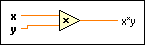

Multiply Function
Owning Palette: Numeric VIs and Functions
Requires: Base Development System
Returns the product of the inputs.
If you wire two waveform values or two dynamic data type values to this function, error in and error out terminals appear on the function. The connector pane displays the default data types for this polymorphic function.

 Add to the block diagram Add to the block diagram |
 Find on the palette Find on the palette |